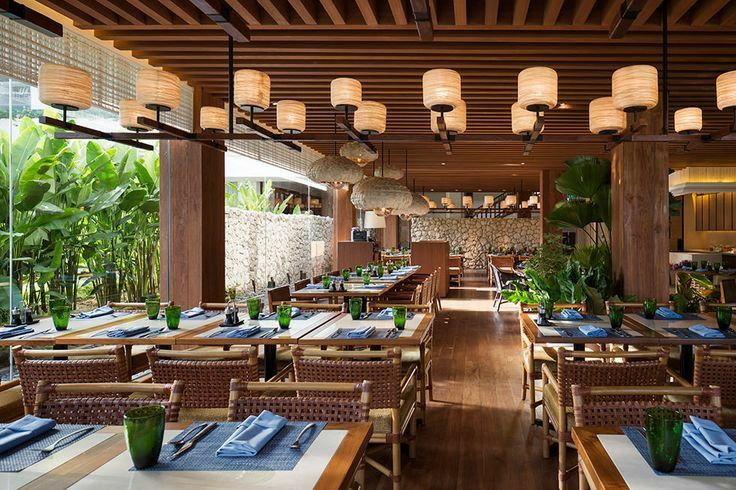

Dapoer Nusantara – Rasa Asli, Dari Hati
Di Dapoer Nusantara, kami percaya bahwa setiap masakan adalah cerita. Cerita tentang rumah, tentang ibu, tentang warisan rasa yang tak lekang oleh waktu. Kami hadir untuk menghidangkan cita rasa otentik dari berbagai penjuru Indonesia — dari rendang Minang yang kaya rempah, hingga gudeg Jogja yang manis dan lembut. Dengan bahan-bahan segar pilihan dan resep turun-temurun, setiap sajian kami diracik dengan cinta dan kehangatan dapur rumah. Di sini, Anda tidak hanya menikmati makanan, tetapi juga merasakan suasana, kenangan, dan kekayaan budaya nusantara dalam setiap suapan. Mari duduk bersama. Nikmati Indonesia, satu piring demi satu.
Jam Buka: Setiap hari pukul 09.00 - 22.00 WIB
Address: Jalan Embun Pagi No.15
Mau menikmati cita rasa nusantara dari rumah atau kantor? Gampang banget!
Ikuti langkah mudah berikut ini:
1. Pilih Menu Favoritmu
Buka halaman Menu kami dan pilih makanan & minuman yang ingin kamu nikmati. Jangan lupa cek rekomendasi spesial hari ini!
2. Pesan Melalui:
WhatsApp: [0812-3456-7890]
Aplikasi Ojol: Cari Dapoer Nusantara di GoFood / GrabFood
Website: www.dapoernusantara.id
Untuk reservasi tanyakan menu spesial hari ini atau kirimkan pesan kepada kami: